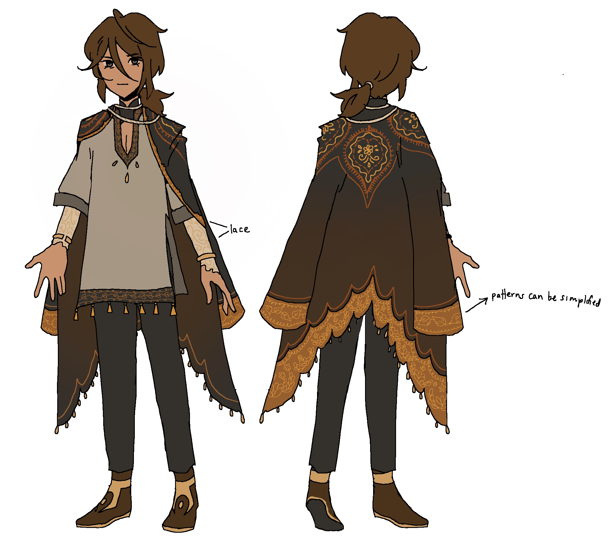

< back
Like Yuan, Mela started off as a Genshin Impact fan character.
I made Yuan first. Then, I thought "I should make them some friends."
Mela was supposed to be a Pyro claymore user from Sumeru.
I ended up divorcing his and Yuan's lore from Genshin Impact, though.

In the beginning, I didn't think much of him.
In the Genshin version, he and Yuan were only connected throuhg An Tai.
I only got the idea to make him from Taiyue to connect him to Yuan months later.
Since then, he's become a very dear character to me.
He and Yuan represent two sides of my love for art.
If Yuan represents the unreachable ideal of what an artist should be, then Mela represents all the "impure" aspects of my love for art.
Desires like wanting attention, seeking understanding and connection, and being really obsessed with something are what give art flavor.
He's probably my favorite OC on this wiki.